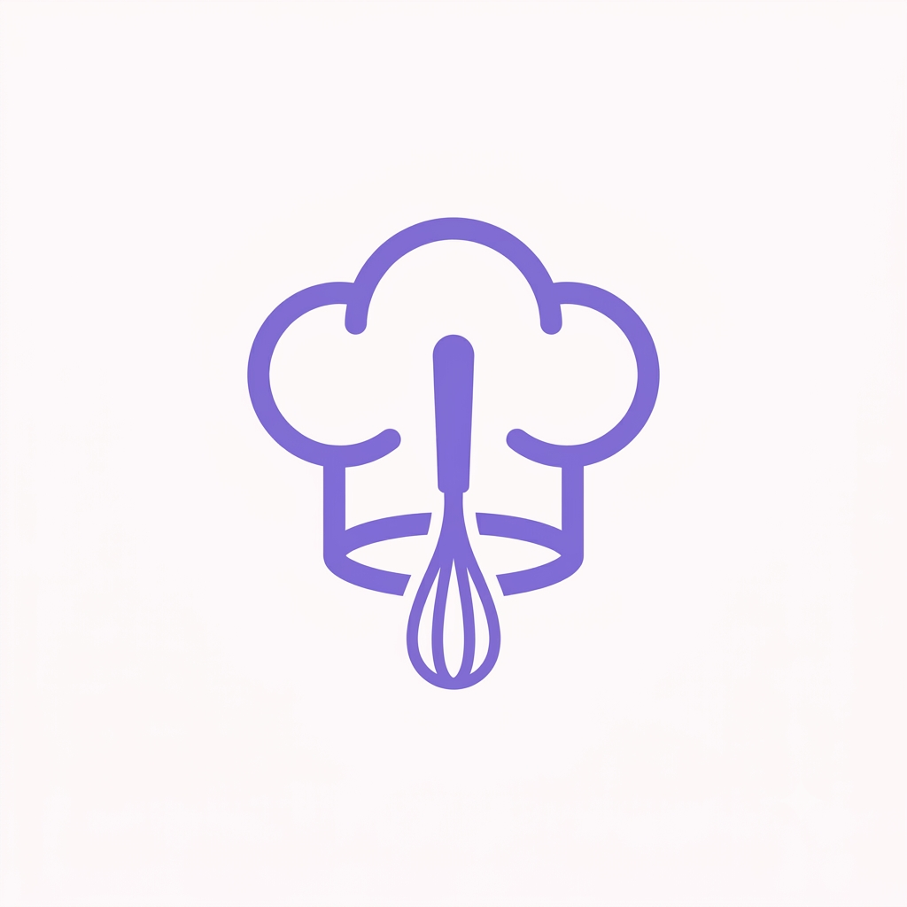

Meu primeiro post
Por: Laura Pereira
Boas-vindas ao meu blog, aqui vou compartilhar dicas sobre gastronomia, e curiosidades da cozinha.
Aqui vou falar sobre algumas curiosidades legais e divertidas

Por: Laura Pereira
Boas-vindas ao meu blog, aqui vou compartilhar dicas sobre gastronomia, e curiosidades da cozinha.